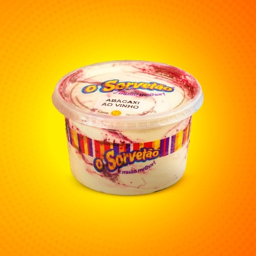
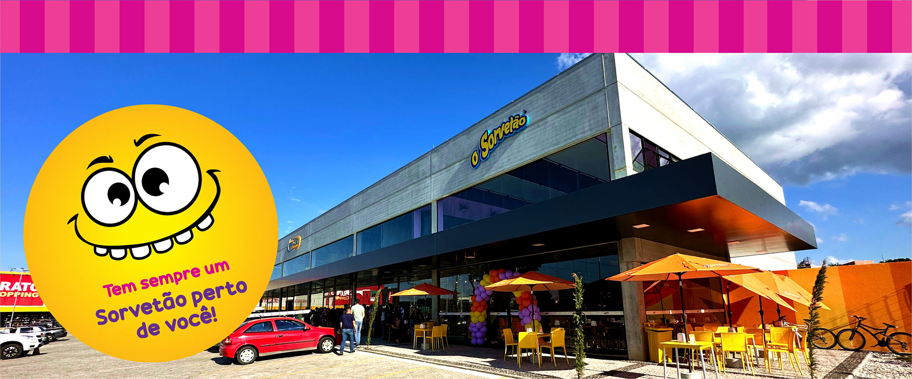
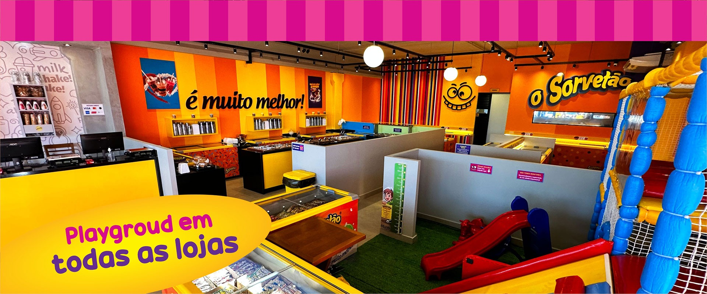
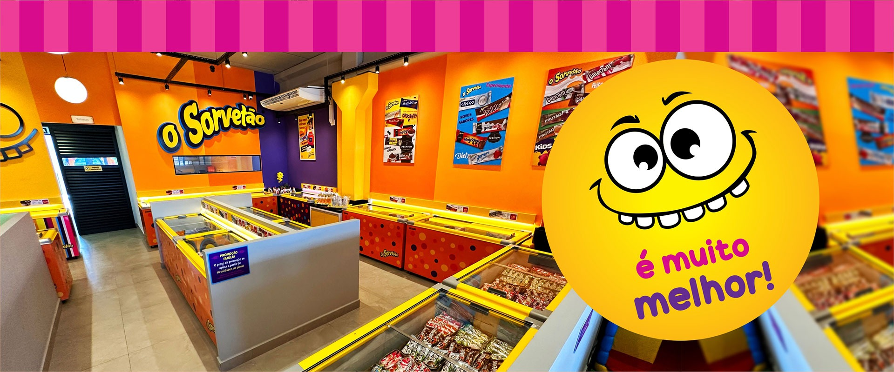
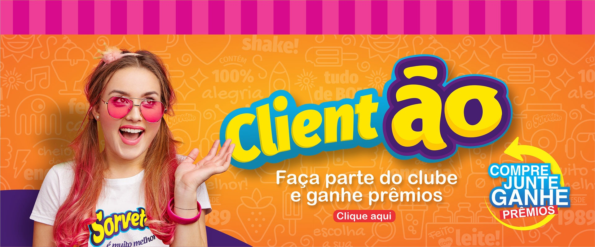

História, Storytelling & Propósito de Marca
Fundada em 1989 no bairro Jardim Morada do Sol (Indaiatuba), a marca nasceu do trabalho incansável do casal Carmo Martins e Sara Lopes. Enquanto Dona Sara cuidava da produção artesanal e do ponto físico, Seu Carmo percorria as ruas com um carrinho de picolé anunciado por uma buzina estridente, que se tornou marco sonoro da reunião das famílias.
Missão de Marca
"Trazer alegria para a vida das pessoas criando momentos especiais!"
Arquétipos Dominantes
O Bobo da Corte (60%): Humor, brincadeira, risadas e espontaneidade.
O Cara Comum (40%): Pertencimento, generosidade e preço acessível.
Evolução Geracional
Sob a gestão de Douglas Martins, a rede se modernizou em parceria com estúdios de design (Fancio & Picchi) e marketing (Bípede Digital), consolidando mais de 9 lojas próprias e ampla revenda.
Análise Semiótica do Logotipo e Mascote
Decomposição do Wordmark:
- Lettering Bubble: Formas infladas, sem serifa, sugerindo a cremosidade do sorvete e a inocência dos quadrinhos infantis.
- Arco Ascendente: Dinamismo ótico da esquerda para a direita, comunicando entusiasmo, celebração e vitalidade.
- Tridimensionalidade (3D): Face amarela solar, extrusão volumétrica em roxo profundo e contorno em ciano.
- Slogan Cursivo: "é muito melhor!" em caligrafia descontraída e assertiva.
O Mascote "Sorriso Amarelo"
Um dos ativos mais memoráveis da marca é o emoticon amarelo em arco aberto, com dentes brancos expressivos e olhos esbugalhados. Ele ativa o reflexo de espelhamento psicológico nas crianças, desarmando tensões e instalando um ambiente de pura diversão logo na entrada das lojas.
Psicologia das Cores & Códigos Técnicos
A paleta cromática d'O Sorvetão equilibra o calor que gera o impulso de compra (Amarelo e Laranja) com o frescor refrescante do frio (Roxo e Ciano).
Amarelo Ouro
Cor de maior luminosidade à distância. Desperta calor, sol e fome.
Roxo / Violeta
Complementar do amarelo. Representa magia, fantasia, açaí e nobreza.
Laranja Vital
Cor de acolhimento e entusiasmo. Pintura dominante das paredes de loja.
Ciano Refresco
Alívio térmico. Sensação de gelo, água cristalina e céu aberto de verão.
Rosa Framboesa
Acentuação açucarada, remetendo a caldas, morangos e atmosfera festiva.
Portfólio de Produtos & Design de Embalagens
A arquitetura de produtos utiliza com excelência o sub-branding com nomes sonoros e embalagens de alto apelo de apetite:

Linha MAGMAX Crocante
Segmento indulgente. Embalagem em marrom cacau com ondas de chocolate e tipografia clássica com casquinha triturada.

Linha FRUTÃO (Frutas Reais)
Fundo rústico de ripas de madeira, tipografia bold estêncil e fotografia de fruta fresca em alta definição. Refrescância pura.

Linha GALACREM (Leite Condensado)
Ondas lácteas de leite fresco, colher derramando leite condensado cremoso e faixas de azul royal criando contraste sensorial.

Potes de Consumo Familiar (1L a 5L)
Potes transparentes que exibem a textura do sorvete artesanal, cintas listradas e tampas de fácil empilhamento.
Retail Design & Experiência de Loja (Salto e Indaiatuba)

Fachada Contemporânea e Aberta
Painéis de concreto, vidros do piso ao teto, toldos metálicos pretos, mesas amarelas com ombrelones laranjas ao ar livre.

O Playground como Diferencial Estratégico
Área kids integrada, grama sintética e brinquedão. Retém a família na loja por 40 a 60 minutos e multiplica a fidelidade.

Ilhas Centrais de Autosserviço
Freezers envelopados com poás coloridos, balcões de confeitos e caldas ao alcance das mãos do cliente.

Programa Clientão & Pattern de Doodles
Sistema de cashback fidelizador acompanhado por uma rica malha gráfica de ilustrações autorais sobre fundo laranja.
Análise SWOT da Marca O Sorvetão
FORÇAS (S)
- Mais de 35 anos de história afetiva regional.
- Playground infantil gratuito nas principais unidades.
- Excelente custo-benefício e fartura (potes 5L).
- Fábrica própria e ampla capilaridade local.
- Programa de cashback "Clientão" ativo.
FRAQUEZAS (W)
- Falta de um ícone digital oficial ultra simplificado.
- Variação de padrão arquitetônico entre lojas antigas e novas.
- Percepção popular que limita venda de produtos de altíssimo valor agregado.
- Filas e lentidão no caixa em picos de calor.
OPORTUNIDADES (O)
- Criação da linha retrô "Origens 1989".
- Ativação do mascote em eventos escolares e datas infantis.
- Padronização do modelo de franquias.
- Crescimento do delivery programado de potes para churrascos e eventos.
AMEAÇAS (T)
- Concorrência ultra agressiva de preço de atacado (Oggi, Eskimó).
- Migração de público jovem para gelaterias artesanais italianas.
- Flutuação no preço de insumos (leite em pó, gordura, cacau).
- Sazonalidade natural nos meses frios de inverno.
Plano de Ação & Recomendações Estratégicas
1. Logo Responsivo (Design Flat)
Criar uma versão plana e limpa do logotipo, preservando o contorno e as cores, para aplicação perfeita em favicons, apps e telas de smartwatch.
2. Batismo Oficial do Mascote
Lançar um concurso comunitário nas escolas de Salto e Indaiatuba para batizar o mascote amarelo sorridente, criando fantasia viva para eventos de fins de semana.
3. Espaço Cenográfico "Carrinho 1989"
Instalar nas lojas conceito uma réplica do carrinho de picolé pioneiro do Seu Carmo com sua buzina original como ponto "instagramável" para fotos de família.
4. Totem de Autoatendimento Express
Permitir que clientes que compram apenas picolés ou potes de 5L paguem direto no cartão/PIX, desafogando as filas das balanças de sorvete por quilo.